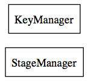

Package com.sekati.managers
Class Summary
ContextMenuManager
ContextMenu management for right clicks!
SoundManager
centralizes & solves issues calling linked sounds from dll's or locally extrapolated on ca.nectere.dllFactory.SoundFactory
StageManager
simple stage manager class
Class Inheritance Diagram

Overview
Package
Class
Source
Index